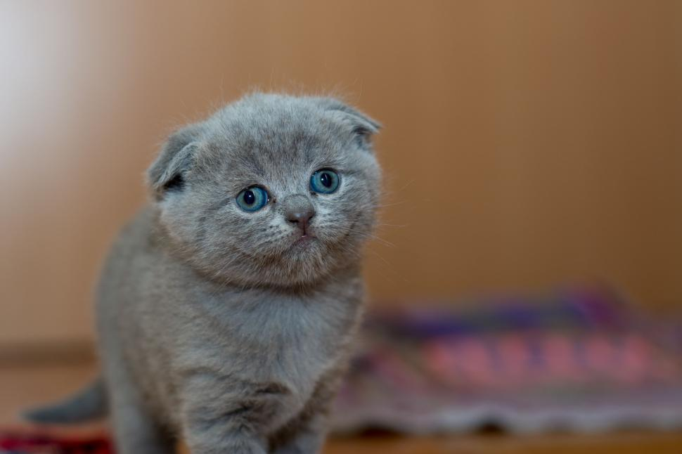
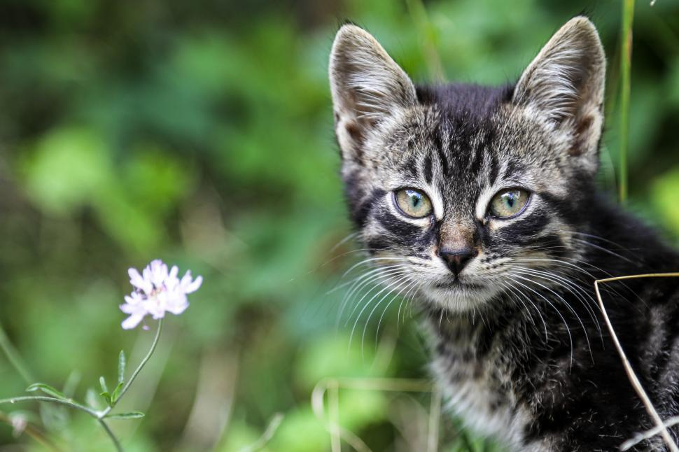
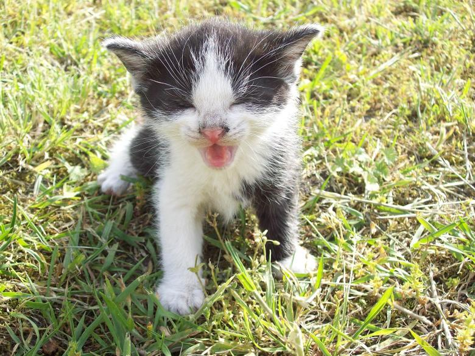
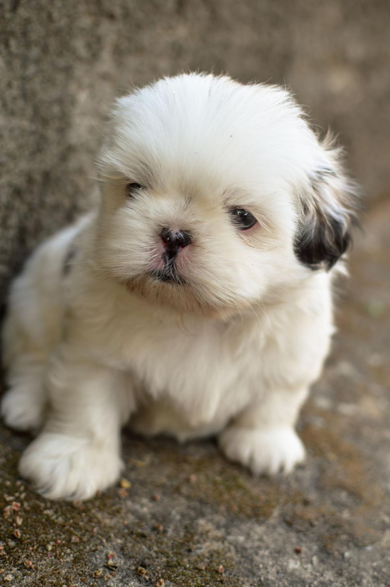
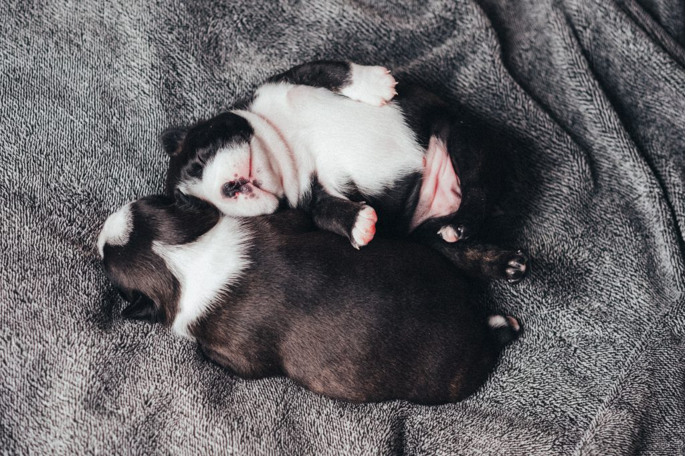

Adote um Amigo, Mude uma Vida
Encontre seu novo melhor amigo e dê a ele um lar cheio de amor e carinho.
Bem-vindo à Patinhas.org
Nascemos em 2025 do sonho de resgatar, cuidar e encontrar lares permanentes e amorosos para animais em situação de vulnerabilidade. Acreditamos que toda vida importa e lutamos para dar uma segunda chance a cães e gatos abandonados.
Conheça mais sobre nossa história e veja como você pode fazer parte dessa missão.
Nossos Amigos Esperando por um Lar





